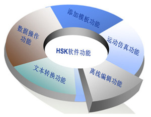
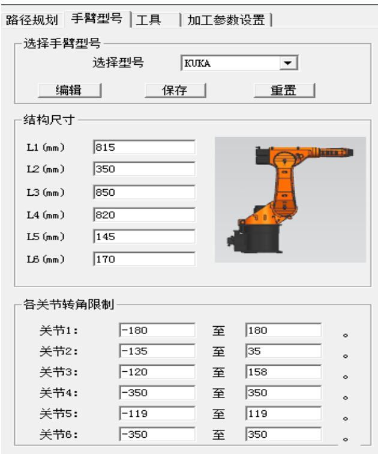
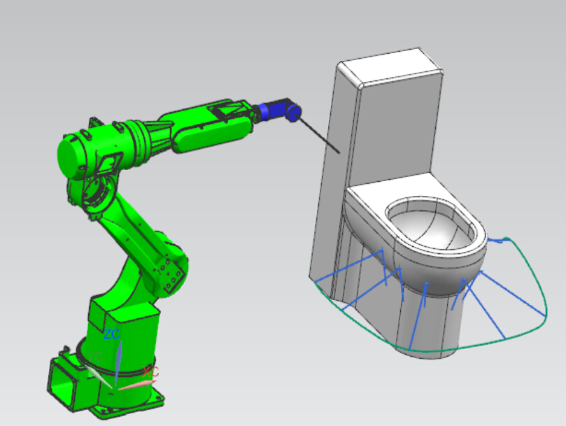
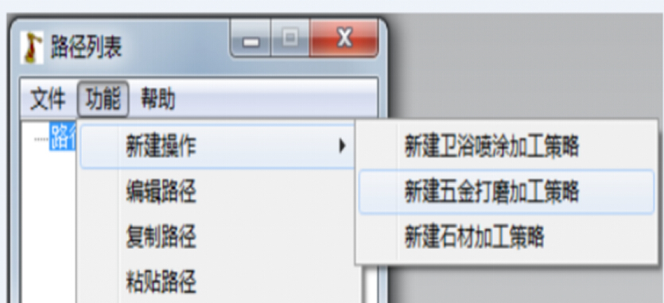
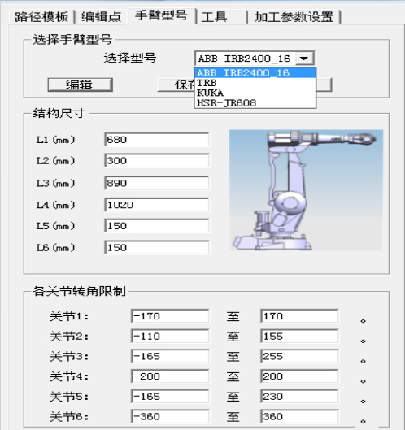
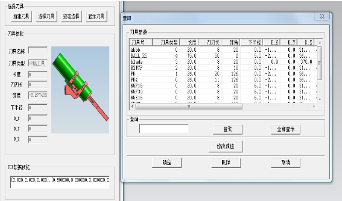

7.1离线编程的定义与发展现状
7.1.5华数机器人离线编程软件的功能说明
华数机器人离线编程软件(HuaShu RobotCAM以下简称HSRC)是由华中科技大学国家数控系统工程技术研究中心针对机器人离线编程开发的一款应用软件。该软件以SIEMENS NX作为CAD操作平台，通过该软件不仅可以规划机器人路径生成轨迹、输出机器人NC程序，还可以实现机器人运动仿真、干涉检查以及实现对机器人参数、工具参数的实时修改。目前该软件主要用于航空件喷漆、汽车零部件磨削、钣金喷漆、激光加工等行业。具体涉及的应用方面包括：
● 喷涂、烤漆，如卫浴、洁具的喷漆；
● 复杂零件的多轴铣削加工；
● 研磨/抛光，如五金零件磨削加工；
● 模具淬火；
● 石材雕刻，如各种工艺品的模型制作、加工；
● 激光切割和焊接。
1、HSRC软件具体功能
HSRC主要有以下功能，其结构如图7-5所示。
（1）路径模板功能
考虑到用户进行路径规划时，可能会有许多路径时相同或者类似的，HSRC提供了一个“路径模板”的功能，即可以将备用路径存于模板中以供随时用户随时使用。
（2）运动仿真功能
HSRC具备模拟仿真功能，编程人员可在软件中根据所设计路径规划模拟实际机器人的运动。用户可根据仿真效果、干涉分析进而对所设计的路径合理性有直观了解，进而调整得出合理方案。
图7-5 HSRC软件功能
图7-6 HSRC机器人参数可编辑功能
（3）离线编辑功能
HSRC提供了较为丰富的数据编辑功能，如图7-6，操作过程中的路径生成过程、机器人模型选择、工具选择等数据都可以进行人为编辑，当然也可以用刀位点编辑功能方便地对难规划区域进行“定点处理”。这些编辑功能不仅极大地提高了软件使用的灵活性，也使得生成的NC代码可靠性及合理性得到有力保证。
（4）文件转换功能
利用HSRC可以读取已备份的程序文件，并将程序路径规划模型重绘在操作界面中。从而将文本文件转变为可输出的给机器人的NC代码文件。此外，针对同样的路径代码，HSRC可输出不同格式适应不同型号的机器人NC代码。
2、HSRC软件主要操作特点
（1）由于HSRC是基于SIEMENS NX所开发的离线编程软件，因而具有完善的CAD建模与直观的人机交互界面系统。机器人三维显示如图7-7所示，同时HSRC中工件模型、工具模型、机器人模型都以三维模式显示给用户，以达到客户在任何位置都可以观察其操作动态。
图7-7 HSRC操作状态的三维显示
（2）如图7-8，HSRC提供了不同工艺模块，能快速生成适用于不同工艺的路径。
图7-8 HSRC不同操作模式选择
（3）HSRC支持已有路径的复制、粘贴。能根据已保存的路径快速建立新的类似路径，同样也能很方便在当前路径中插入另一条已存在的路径。
（4）HSRC可以对操作过程中所用机器人型号、工具等进行选择甚至自行设置参数，如图7-9、7-10，HSRC软件自带机器人型号有ABB、KUKA、HSR几类，自带工具则根据加工类型分为若干种，同时支持用户根据需求编辑或新增新的工具类型。
图7-9 HSRC中选择、编辑机器人型号功能
图7-10 HSRC中选择、新建工具功能
（5）HSRC支持输出多种格式的机器人NC代码，支持输出华数机器人、ABB、KUKA等主流机器人厂家格式的NC程序。
（6）支持三维仿真与碰撞检查，通过三维仿真可以观察机器人的位置姿态，充观地检查编程结果是否合理，仿真过程中如果发生干涉，显示警告提示，根据仿真结果及时进行人工修正，提高编程效率和代码质量。